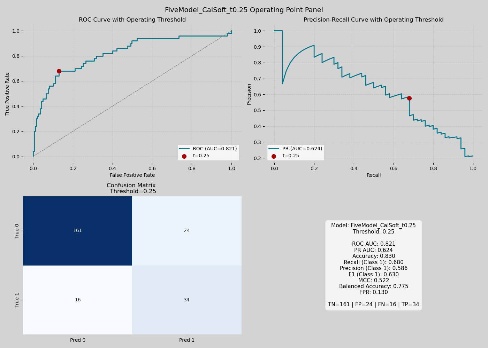
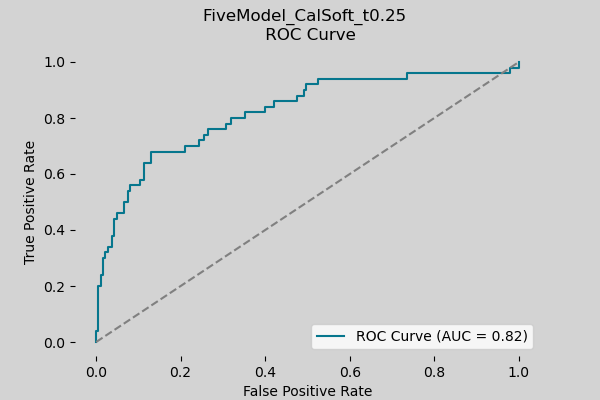
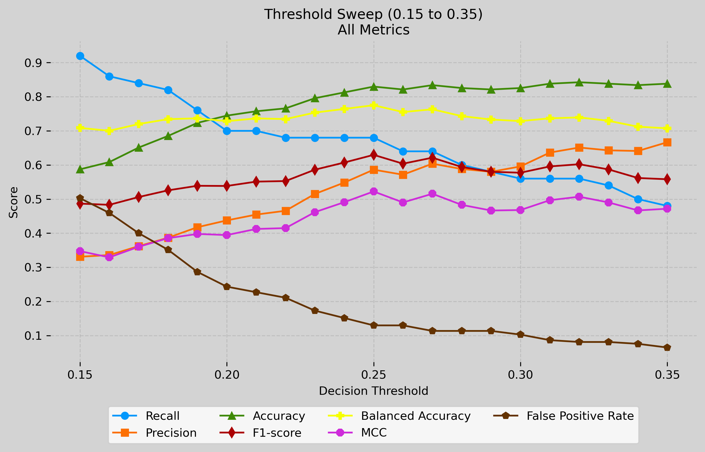
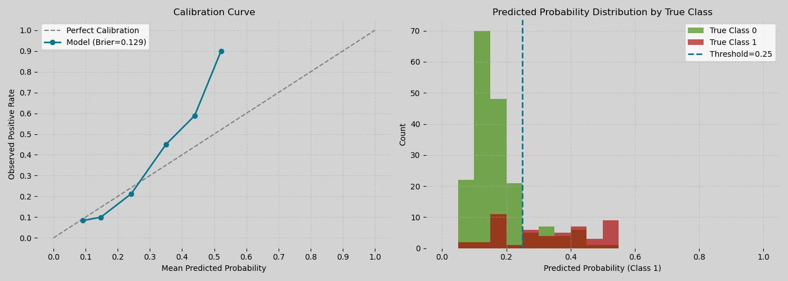
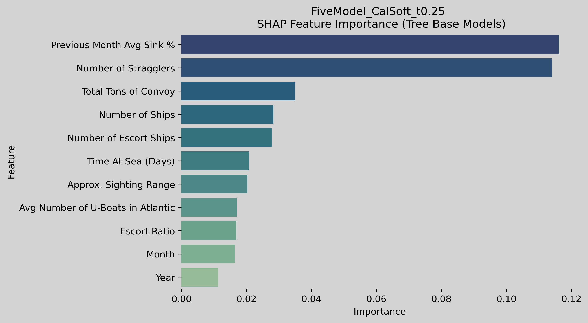
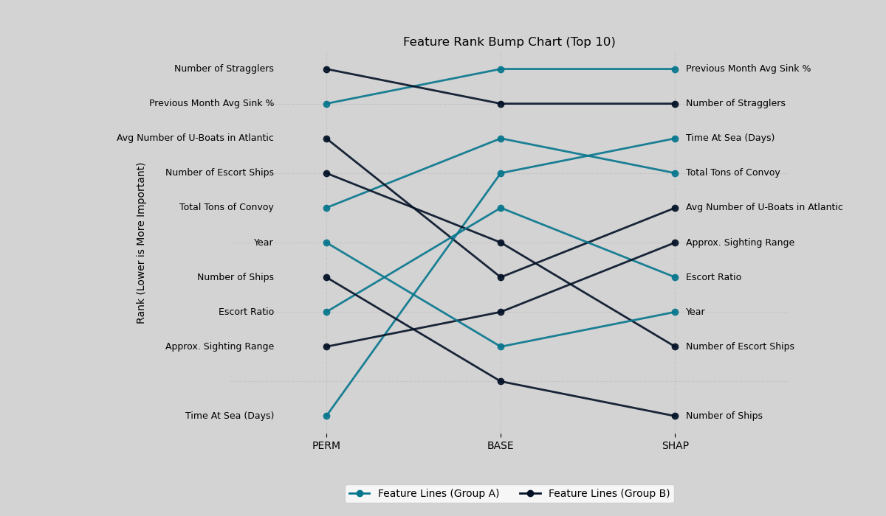
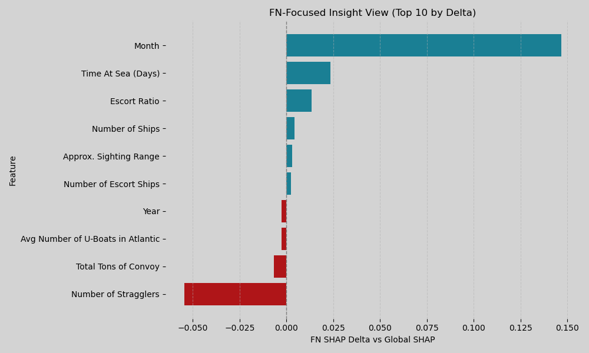
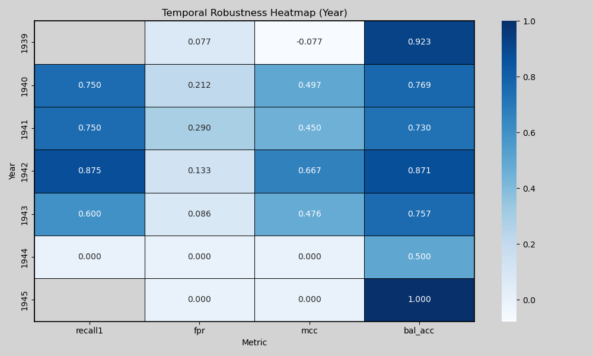

Convoy Risk Prediction Model Analysis
Model Overview
Through extensive testing, the FiveModel_CalSoft_t0.25 calibrated soft-voting ensemble proved to be the most capable model for predicting whether a convoy was at risk of losing at least one ship. The final model configuration examined in this section was evaluated on a held-out test set of 235 convoys at a decision threshold of 0.25. This section presents the model's overall performance, threshold behavior, feature importance, and main limitations. All tests come from the results notebook, with the underlying analysis code available here.
0.821
0.830
0.680
0.586
0.630
0.522
0.775
0.320
Overview: The model exhibits strong class separation (AUC 0.821) with moderate risk recall/precision at the selected threshold.
The panel below summarizes the final operating point across the model's main evaluation metrics.
Operating Point Summary

The operating point panel shows that the confusion matrix correctly identified 34 at-risk convoys while missing 16 and producing 24 false positives. This reflects the main tradeoff of the final model: it improves risk detection meaningfully, but some dangerous convoys are still missed. More broadly, the ROC-AUC of 0.821 indicates that the model separates low-risk and at-risk convoys well overall, even though the final classification threshold still requires a practical balance between recall and false positive control.
Precision-Recall Curve

Compared with ROC-AUC, the precision-recall view more clearly shows the tradeoff between catching dangerous convoys and limiting false alarms. The curve indicates that the final ensemble can recover a meaningful share of at-risk convoys, but doing so requires accepting a moderate decline in precision.
Classification Report
| Class / Avg | Precision | Recall | F1-Score | Number of Convoys |
|---|---|---|---|---|
| Low Risk | 0.910 | 0.870 | 0.890 | 185 |
| At Risk | 0.586 | 0.680 | 0.630 | 50 |
| Macro Avg | 0.748 | 0.775 | 0.760 | 235 |
| Weighted Avg | 0.841 | 0.830 | 0.834 | 235 |
The classification report complements the operating point panel by showing where the model performs best and where it remains weaker. In particular, it makes the gap between low-risk and at-risk convoy detection easier to see at the class level.
Threshold Selection

The all-metric threshold sweep helps justify the final threshold choice of 0.25. Higher thresholds can improve accuracy slightly, but they do so by missing more at-risk convoys. Lower thresholds increase recall, but the gain comes at the cost of more false positives and weaker overall balance. The selected threshold therefore reflects a practical compromise between identifying dangerous convoys and limiting unnecessary false alarms.
Calibration and Probability Distribution

The calibration and probability distribution plot provides a different perspective from the classification metrics by showing how meaningful the predicted probabilities are. This matters because the model is intended not only to assign classes, but also to rank convoy risk. A well-calibrated model makes its probability outputs more interpretable, while any deviation from calibration suggests caution when treating predicted probabilities as direct risk estimates.
Feature Analysis


Feature importance was examined through multiple methods, including permutation importance, aggregated base-model importance, and SHAP. Across these approaches, several variables repeatedly appeared near the top: Previous Month Avg Sink %, Number of Stragglers, Total Tons of Convoy, Avg Number of U-Boats in Atlantic, and Time At Sea (Days). Together, these results suggest that recent operational danger, convoy vulnerability, and exposure over time are central to the model’s predictions. These findings are in line with historical trends, including known risks such as U-boats targeting straggling ships. Although the importance methods do not agree perfectly, they show substantial overlap. In particular, SHAP and aggregated base-model importance align closely, while permutation importance differs somewhat, likely because it captures interaction effects differently. This makes the feature results more convincing overall, since the same small group of variables remains influential across multiple methods rather than appearing only in a single ranking system.
False Negative Analysis

False negative analysis suggests that many of the missed at-risk convoys are not simply borderline predictions that fall just below the decision threshold. Instead, they appear to be structural misses, meaning the model is failing to fully represent some dangerous convoy patterns. Given the complexity of modeling submarine warfare, outliers, and the high degree of uncertainty in attacks, these results are to be expected. Likely, no model could capture the full distribution of risk. The FN-focused SHAP view further suggests that seasonality and time-related context may matter more in these missed cases than the global importance rankings alone would imply.
Temporal Robustness

The temporal robustness analysis shows that model performance is not stable across all years of the war. Some periods, especially 1942, show comparatively strong results, while others deteriorate noticeably. This indicates temporal drift in the underlying problem and suggests that one global threshold may not be equally appropriate across all wartime contexts. Historical changes between years, including the number of escorts, the frequency of convoys, U-boat attack strategies, and much more, likely account for these differences.
Limitations
Despite the strength of the final ensemble, several limitations remain. The model still misses a meaningful number of at-risk convoys, performance varies across time periods, and some important wartime factors cannot be captured in the available data. Future work should focus on time-aware validation, segment-specific thresholding, and feature improvements targeted at structural false negatives.